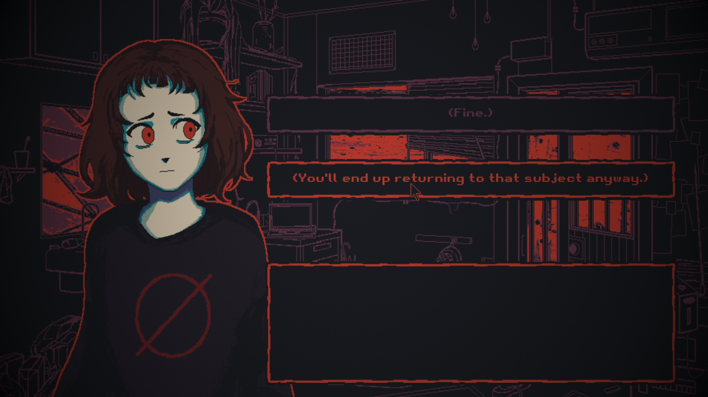
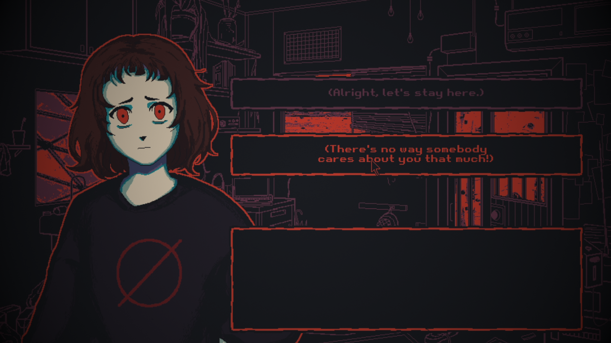

Jogo: Milk outside a bag of milk...
Desenvolvedor: Nikita Kryukov
Lançamento: 16/dez./2021
Catecorias: Terror psicológico; Psicodélico
My Score: ⭐⭐⭐⭐
Minha música preferida na obra :3

Sobre o jogo
“A continuação de Milk inside a bag of milk inside a bag of milk. Mergulhe dentro de um mundo louco e bizarro mais uma vez e ajude a garota a se sentir um pouco mais feliz.” Essa é a descrição do jogo, porém vou comentar com minhas palavras e tentar mostrar um pouco mais sobre esse jogo incrível. Como a descrição havia dito, Milk outside a bag of milk outside a bag of milk é uma continuação do jogo Milk inside a bag of milk inside a bag of milk, eu sei, nome desnecessariamente grande e confuso, porém este primeiro jogo não passa de 50 minutos de gameplay, não que isso signifique que o jogo seja ruim, o primeiro jogo é muito bom, porém muito mais psicodélico e confuso comparado ao segundo.
Agora voltando com o foco no Segundo jogo, Milk outside a bag of milk fala sobre uma garota aparentemente com diagnostico de esquizofrenia e tenho minhas suspeitas de algum grau de autismo, a comunidade do jogo costuma chamar ela de “Milku Chan”, a história do jogo se baseia em você conversando com essa garota enquanto ela passa por situações extremamente fora da linha de pensamento de pessoas normais como procurar seus pensamentos em forma de vagalumes que estão escondidos em seu quarto.
Esse jogo conta com 5 finais diferentes, porém todos trazem uma reflexão extremamente profunda e sentimental. E pode ter certeza de que no final do jogo, sem perceber, você terá criado um vínculo sentimental de cuidado em relação a essa garota, com sua gentileza, bondade e coração puro.
Os 5 finais
Como eu havia dito Milk Outisde a Bag of Milk possui 5 finais únicos distintos, e como sou muito gente boa vou ensinar para vocês como fazer cada um deles, nao é nada complexo comparado aos de undertale(proximo jogo da lista), aqui você apenas precisa concluir ou não alguns requisitos. Contudo, recomendo fortemente que zere o jogo normalmente primeiro para aí sim vir aqui e tentar os outros finais e identificar qual final você pegou.
Obs: Pode conter spoilers.
Shop Ending
Requisitos:
- Acione a cena de estrangulamento respondendo "(É isso. Não tenho ideia. Isso é... estranho.)" para Milk-chan.
- Condição alternativa: não atenda a nenhum dos outros 4 rquisitos (este é o final padrão).
Phone Ending
Requisitos:
- Não acione a cena de estrangulamento.
- Pegue o telefone da Milk-chan. Procure...
Mirror Ending
Requisitos:
- Acione a cena de estrangulamento.
- Não pegue o telefone da Milk-chan.
- Colete todos os 5 vaga-lumes (monte de comprimidos, papéis de dosagem, laptop, caderno de desenho e mochila).
Room and Field Ending
Requisitos:
- Não acione a cena de estrangulamento.
- Não pegue o telefone da Milk-chan.
- Não colete todos os 5 vaga-lumes.
- Acione o Diálogo Completo do Laptop respondendo "(Você acabará voltando a esse assunto de qualquer maneira)" para Milk-chan.
- Vá para a varanda respondendo "(Não é possível que alguém se importe tanto com você)" para Milk-chan.
Acionando o diálogo Completo do Laptop:
Indo para varanda:
Stairs Ending
Requisitos:
- Não acione a cena de estrangulamento.
- Não pegue o telefone da Milk-chan.
- Não colete todos os 5 vaga-lumes.
- Não vá para a varanda.
"(Tudo bem, vamos ficar aqui)"
Minha visão
No início do jogo fiquei meio perdido e não entendendo absolutamente nada do que estava acontecendo, mas depois me acostumei a aceitar que só não faz sentido pra mim, mas pra garota faz, e isso me encantou, eu ver um mundo que foge do padrão da minha realidade, além de toda a reflexão e teorias que o jogo deixa em aberto pra nos mesmos pensarmos, jogos com esse nível de imersão psicológica são minha paixão, vão perceber muito isso nos próximos jogos.